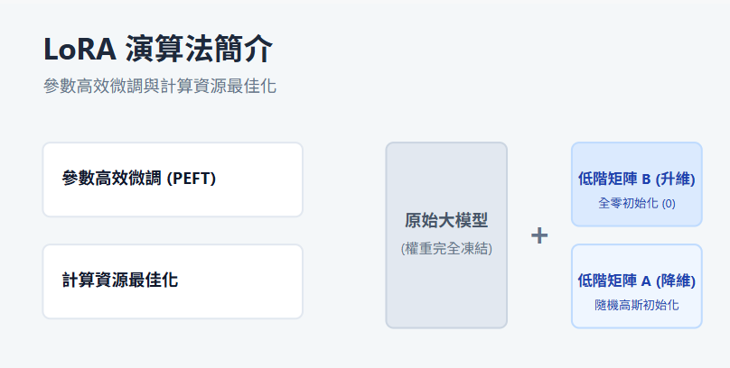
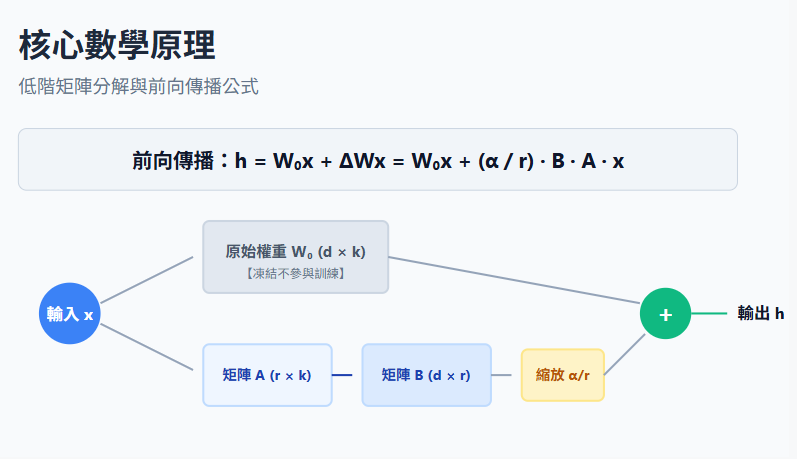
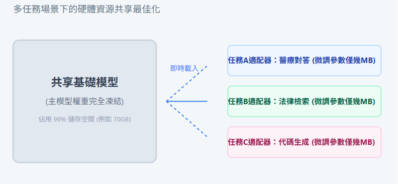
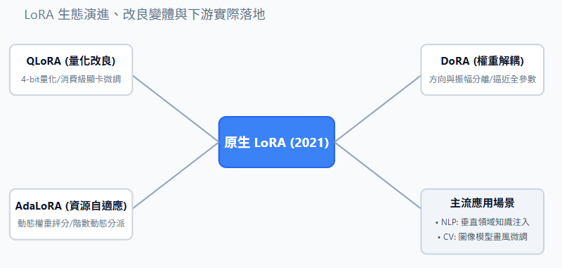
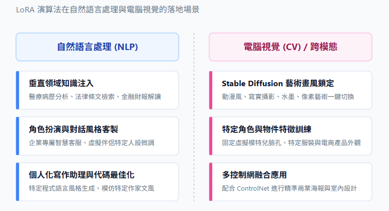

隨著大型語言模型(LLM)的快速發展，如何有效微調這些擁有數十億參數的模型，成為目前人工智慧領域的重要課題。然而，全參數微調對計算資源與記憶體的要求極高，這對於一般研究者或硬體設備有限的團隊來說是極大的挑戰。低階適應(Low-Rank Adaptation,簡稱LoRA)正是微軟研究團隊為了克服此瓶頸而提出的一種參數高效微調(PEFT)技術。
LoRA的核心概念非常實用：它在微調過程中完全凍結預訓練模型的原始權重，並在Transformer架構的每一層中，額外注入一組可訓練的低階分解矩陣。這種設計讓需要訓練的參數數量與記憶體消耗大幅降低，使中高階消費級硬體也能參與大型模型的微調，且最終在下游任務表現上的效果，依舊能與全參數微調相當。

在傳統的微調過程中，模型透過更新預訓練權重矩陣W₀(其維度為d×k)來適應新任務，更新後的權重可以表示為W=W₀+ΔW。
LoRA的核心假設在於：模型在適應新任務時，權重更新量(ΔW)其實具有較低的「內在階數」(Intrinsic Rank)。這意味著我們不需要直接優化一個高維度的完整矩陣，而是可以透過數學方法將其簡化。因此，LoRA將大矩陣ΔW拆解為兩個低階矩陣B與A的乘積：
其中各矩陣的定義與特性如下：
結合上述架構後，修改後的網路層在進行前向傳播時，其數學表達式如下：

在模型微調完成並投入部署時，LoRA可以達到零推論延遲。這是因為低階矩陣B與A的乘積可以直接加回原始凍結的權重中：W=W₀+B·A。當面對多工部署或需要切換不同任務時，只需要從當前權重中扣除目前的B·A，並加上另一個任務的LoRA模組即可。這種抽換模組的機制，讓伺服器多任務部署的效率得到極大的提升。

自從原版LoRA架構推出並獲得成功後，開源社群與研究團隊也陸續開發出許多延伸技術：

透過這次對LoRA演算法的研究，我體會到線性代數在深度學習優化中所扮演的關鍵角色，他的工程設計非常精妙，透過低階矩陣近似的數學技巧，將原本成本極高的全參數最佳化問題，轉化為輕量且高效的矩陣運算。
這項技術不僅降低了個人研究者參與大型模型應用的硬體門檻，也為未來將AI模型部署於邊緣裝置或進行綠色運算時，提供了清晰且具啟發性的解決方向。